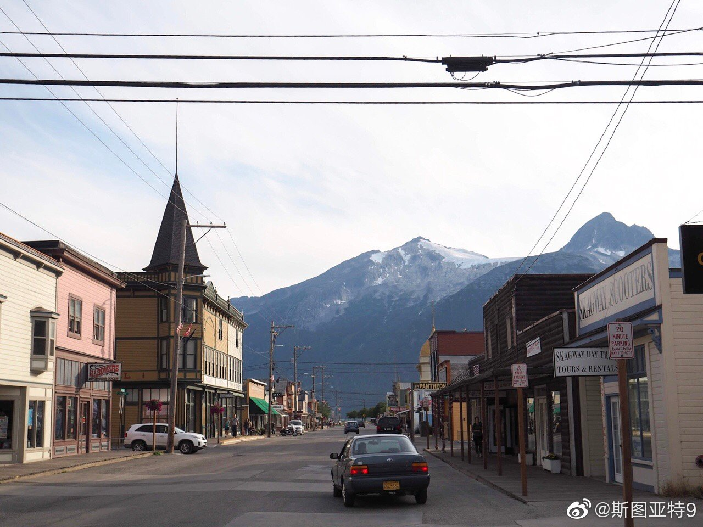
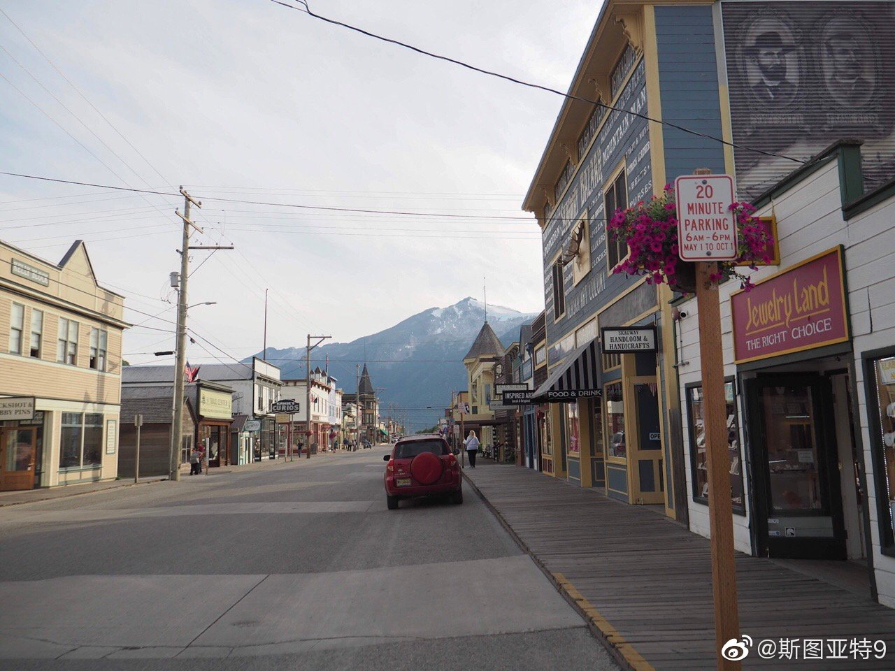
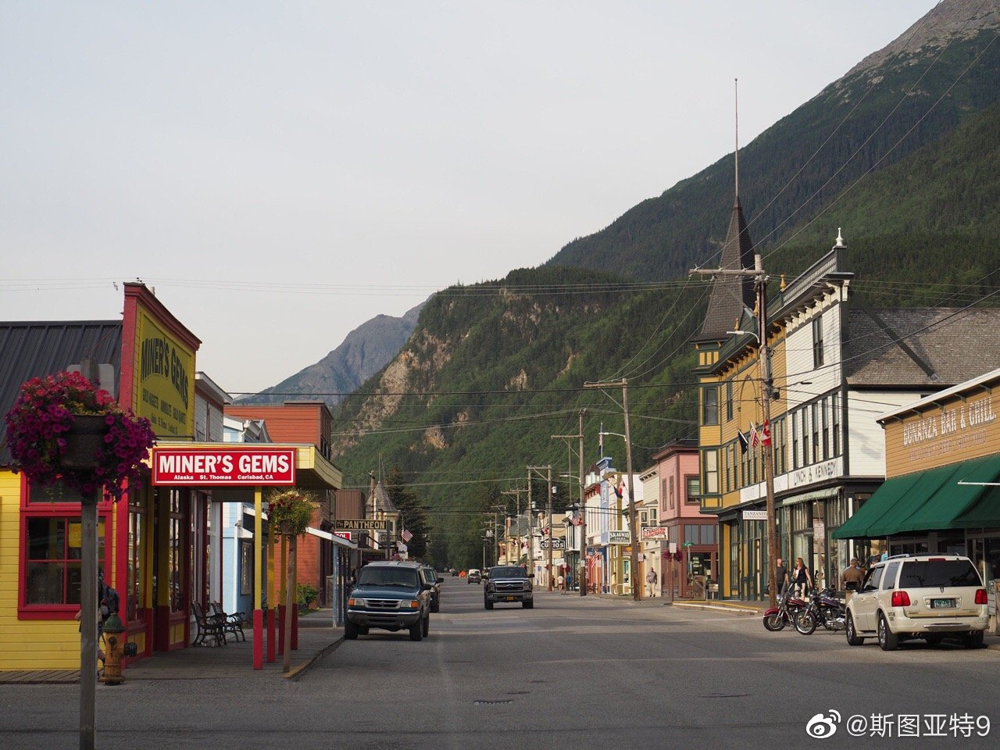
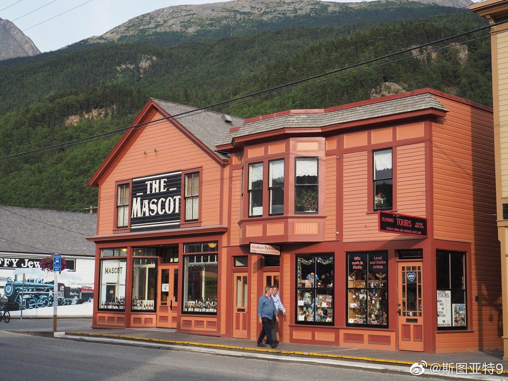
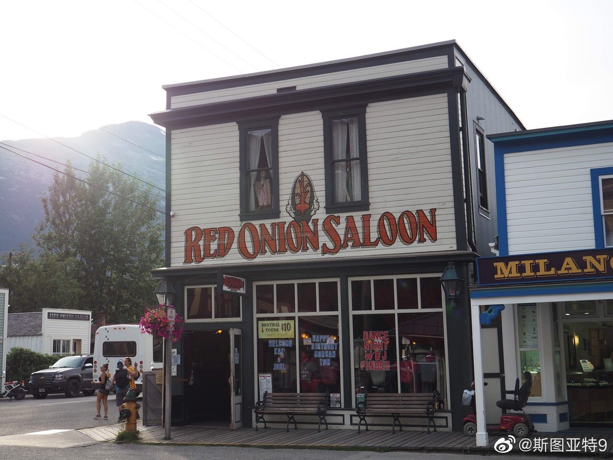
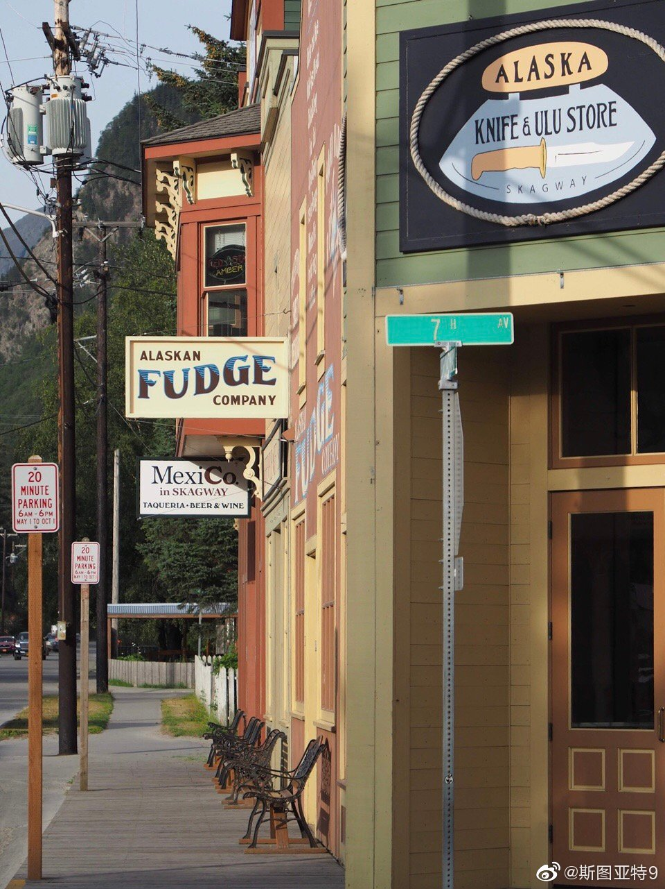
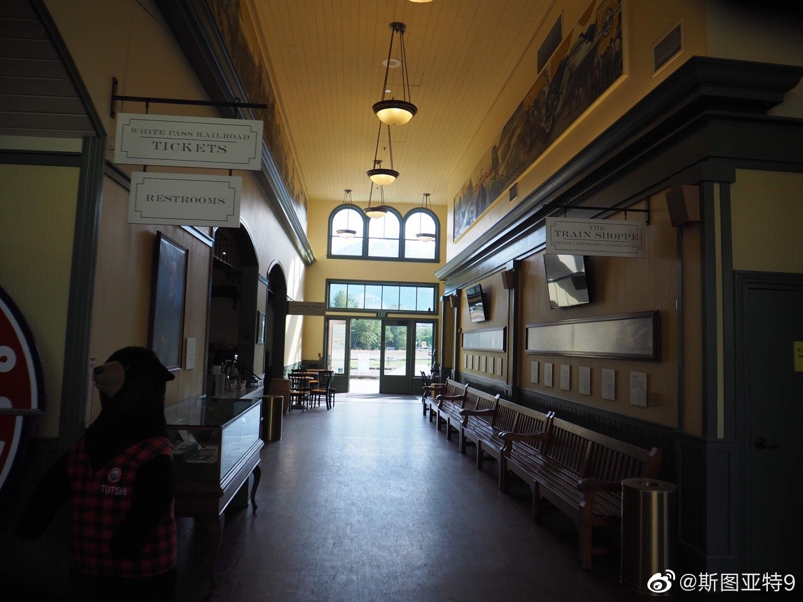
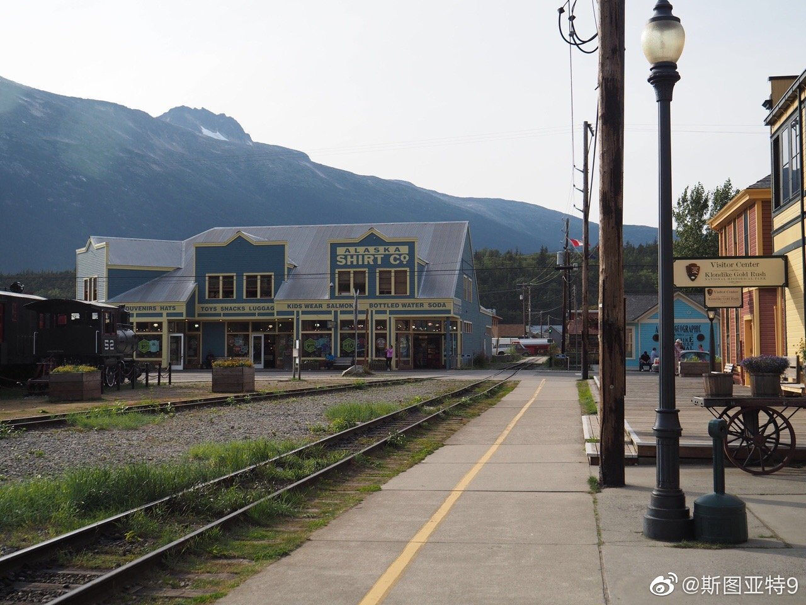
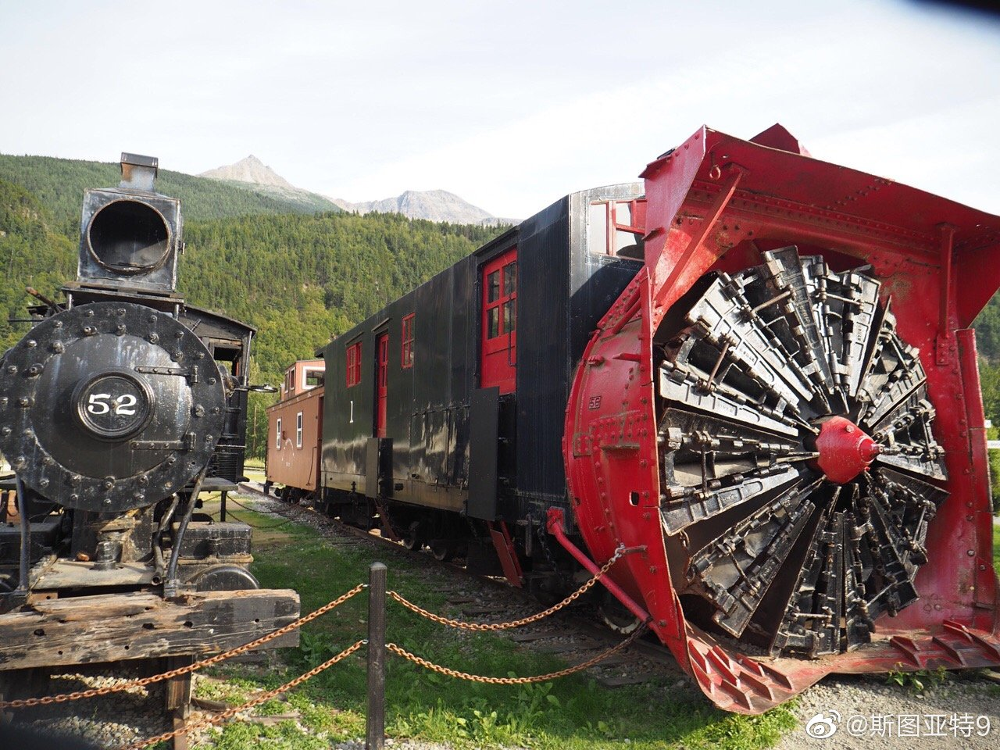

阿拉斯加邮轮游的照片从哪里开始分享呢？淘金小镇Skagway吧。这个小镇号称保存或恢复到了1890年代的感觉。可能因为是傍晚多数有人已经回到游轮上了吧，我们走在这个小镇有一种时间凝固的感觉。中间那一张上Red Onion Saloon的二楼当年是个妓院，曾住着个名妓。是不是所有淘金潮小镇都得有点妓女的韵事才完整啊？
游轮就是个移动的度假村。然后偶尔到个港口，下来找几张照片。所以很适合“度假”，勉强能称为“旅游”。除了前面说的老幼病残没办法的以外，坐游轮“度假”也蛮合适的，喜欢旅游的估计就看不上了。我家现在已经不提“旅游”这个词了……
这是第二次去阿拉斯加。上次是和很多人一样，从Anchorage开始去几个国家公园，这次是走游轮的路线去Inside Passage。阿拉斯加的风光确实壮丽，但看不了一会也总要审美疲劳。除了风景以外，阿拉斯加的几大俗项目从哪里去都是差不多的——坐飞机在冰川降落、在冰川见划艇（kayak）、坐狗拉雪橇、钓鱼、看熊、看鲸鱼。看上去上次去做了最好的两项——冰川划艇和冰川降落。这次带着娃没办法，搞了狗拉雪橇（没法坐飞机上冰川所以是土地上拉得）和看鲸鱼。这两个俗项目实在是差距太大。不过，这次在Mendenhall Glacier近距离看到了好几只熊，有一只还特别近。这可以弥补上次在Denali国家公园几乎什么都没看到的遗憾——除了远远看到了几只麋鹿。
这个月坐了去阿拉斯加的游轮。上船一看，正如我们所料，全船基本都是老幼病残。不带孩子、不陪父母的青壮年，几乎一个也没见到。说起来，安排这次出游，我们知道我们没有能力带着这么小的娃去什么硬核的地方，肯定是发达国家。但最初还是有野心说去西班牙南部之类的地方弄个多城市自驾游吧。想了想，老